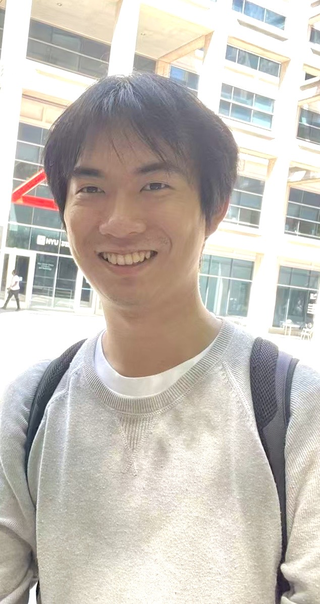
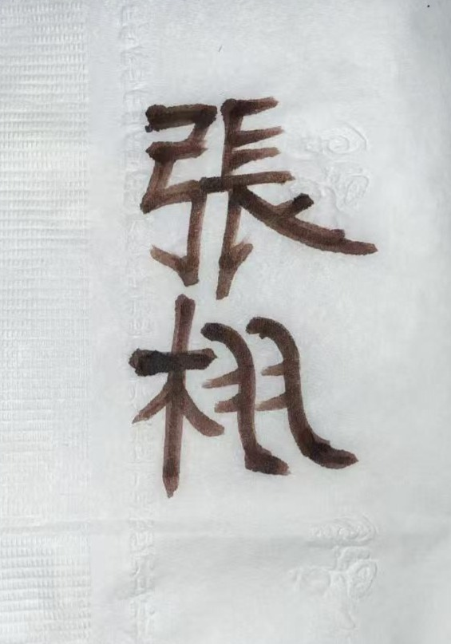

Research Intern @ NYU AI4CE Lab
M.S. in Computer Science, New York University
Contact:
370 Jay Street, CERO
New York University
New York, NY 11201
Hosted on GitHub Pages — Theme by orderedlist

I am currently a Research Intern at the NYU Tandon AI4CE Lab. I completed my M.S. in Computer Science at New York University (2026) and received my B.S. in Mathematics (with honors) from UT Austin in 2024.
My primary research interests lie in Embodied AI, Humanoid Robotics, and Vision-Language Models (VLMs).
In particular, I am interested in real-world physical robot deployment for humanoid navigation, loco-manipulation and motion tracking (in humanoid literatures such as SONIC, it means training to execute input traj in a physically feasible sense. This is different from motion tracking in computer graphics), sim-to-real transfer in physics simulation (Isaac Sim), and multimodal embodied agent for long-horizon task planning.
I also bring a strong combination of physical hardware deployment experience, computer vision research, and low-level system engineering (such as custom CUDA kernel optimization from scratch).

I bring strong mathematical rigor and systems expertise to my research, with technical proficiency in PyTorch, CUDA, C/C++, Isaac Sim, MuJoCo, SLAM, Linux/HPC (SLURM), Python, and MATLAB.